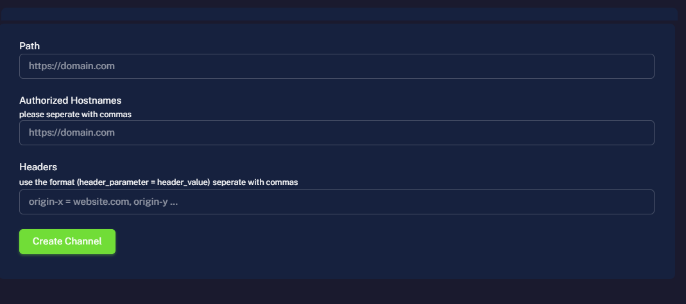
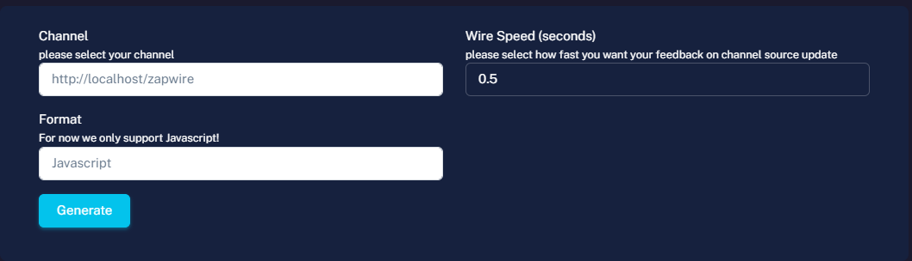
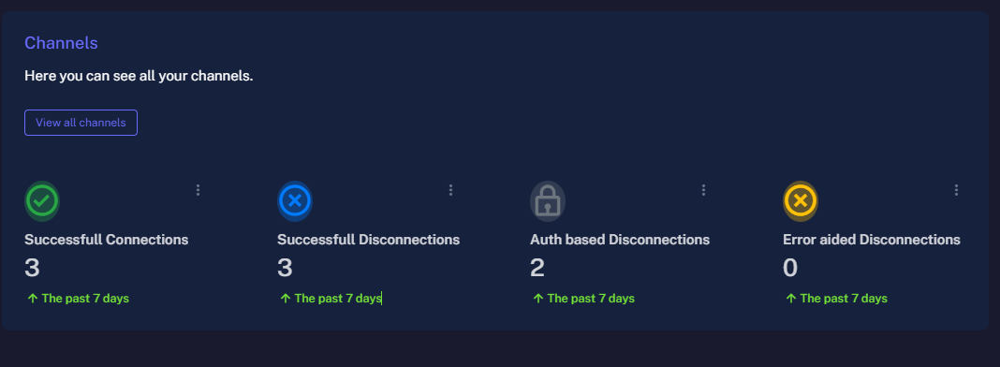
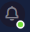
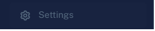

Get Started
Learn how to create a channel in zapwire-ws using our easy to use client and serve your api live to your frontend (react application and others) in just matter of minutes.
Sign-up/Sign-in
This is simple. You just need to sign-up and sign-in to your account. using your email and password. you can create an account from the Signup Form.
Channeling
This is how zapwire manages websockets by channeling your apis live feed to your clientside using your channel_key which is assigned to you on sucessful channel creation.
From the above code we see there are three main fields for channel creation.
- Path
- Authorized Hostnames
- Headers
Path: is the url path that you want to use to create your channel. e.g (api endpoint)
--pattern: [https://myapi.com/api/v1]Authorized hostnames: is the list of hostnames that you want to allow to access your channel.
--pattern: [hostname1, hostname2] or a wildcard (*)
Headers: is the list of headers that you want to allow to access your channel.
--pattern: [header_index = header_value, ...]
Wiring/Wire code wizard
This is the wizard for auto generating wire code for your respective channel.
From the image above we can see that there are three fields.
- Channel
- Format
- Wirespeed
Channel: This field provides an otion input from all your channels created for easy generation.
Format: This field also provides you with an option for format of language of wiring.
Wirespeed: Also known as the latency sets the speed in the wire config i.e the speed at which updates are sent to your wiring.
--pattern: [Number or float >= 0.5] measured in seconds
Note:
For VannilaJs - Make sure the javascript file holding the wire code is a module
Just set the attribute of the script tag to (type="module")
Error Reporting
Simply the breakdown of logs from all your websockets
You can see this from the homepage of your dashboard (overview).
Due to space issue on our website we dump your logs every 7 days
Misc
Extra Info on Zapwire ws
This is located at the top right, used for accesing features like darkmode and to logout

You only get the green dot on this button when admin has a message for you.
Also located at the top right.

Located at the bottom of the dashboard sidebar, used incase you want to disable account or change password of account